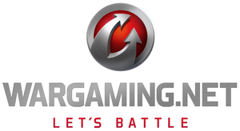

© Wargaming.net
General Exhibition Area
This is the fifth time Wargaming will be exhibiting at Tokyo Game Show.For 2017, Wargaming will be introducing its newest title, "Total War: ARENA".To commemorate the new game, Wargaming will have a unique "Total War: ARENA"-themed booth.There will also be tons of game demos, premium giveaways, stage events and more for visitors to enjoy.Please check the following links for more information about Wargaming and its titles: 【World of Tanks】https://worldoftanks.asia/ 【World of Warships】https://worldofwarships.asia/ 【World of Tanks Console】http://console.worldoftanks.com/ 【World of Tanks Blitz】http://wotblitz.asia/
Exhibiting Title*Please note that the listed information is subject to change without prior notices.
| Exhibiting Title | Genre | Release Date | Platform | VR Platform | Remarks |
|---|---|---|---|---|---|
| Total War: Arena | リアルタイム・オンライン・ストラテジー | Unknown | PC | ||
| World of Tanks | オンライン・タンク・バトル | Being Distributed | PC | ||
| World of Tanks Console | オンライン・タンク・バトル | Being Distributed | PS4 Xbox One Other |
||
| World of Tanks Blitz | モバイル・タンク・バトル | Being Distributed | Steam PC iOS Android Other |
||
| World of Warships | オンライン・海戦ストラテジー | Being Distributed | PC |
Exhibitor’s Event Program*Please note that the listed information is subject to change without prior notices.
More infohttp://worldoftanks.asia/
| Event | Date | Program / Performer |
|---|---|---|
| Wargamingプレスカンファレンス | 2017-09-21 12:00〜12:45 | 今年もCEOビクターキスリーから、Wargamingの最新情報を皆様にお届けします。新作タイトルから、新規のコラボレーションまで、豪華な発表が盛りだくさんです。 |
| 第三次PCメーカー対抗トーナメント | 2017-09-22 11:00〜17:30 | 有名PCメーカー7社が集い、『World of Tanks』において最強のゲーミングPCメーカーを決めるトーナメントが、東京ゲームショウ2017で開幕！ |
| 『World of Warships』オペレーション TGS 2017決勝戦 | 2017-09-23 11:30〜12:30 | 『World of Warships』オペレーション TGS 2017の決勝戦がWargamingブースのステージで実施！ 『World of Warships』の日本一に輝くのはどのチームだ！ |
| 『World of Tanks Console』Japan Arena 2017トーナメント決勝戦 | 2017-09-24 11:30〜12:30 | 『World of Tanks Console』Japan Arena 2017トーナメントの決勝戦がWargamingブースのステージで実施！ 『World of Tanks Console』プレイステーション4プレイヤーの最強チームがついに決定！ |
| VS Wargaming | 2017-09-22 2017-09-23 2017-09-24 15:15〜15:45 | 今年はついに全世界のWargaming 社員の中から最強のメンバーが集結します！ |
| 『World of Tanks』スペシャル・エキシビションマッチ | 2017-09-23 14:15〜15:15 | PC版『World of Tanks』eSports シーンの最前線で活躍する選手たちの熱き戦いが今年も！ |
| 『World of Tanks Blitz』スペシャル・マッチ (仮) | 2017-09-24 13:45〜14:45 | モバイルでも本格派！ 『Blitz』の本気を今年もお届けします。 |